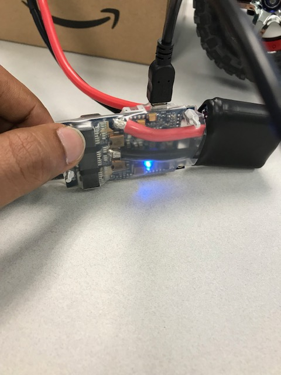
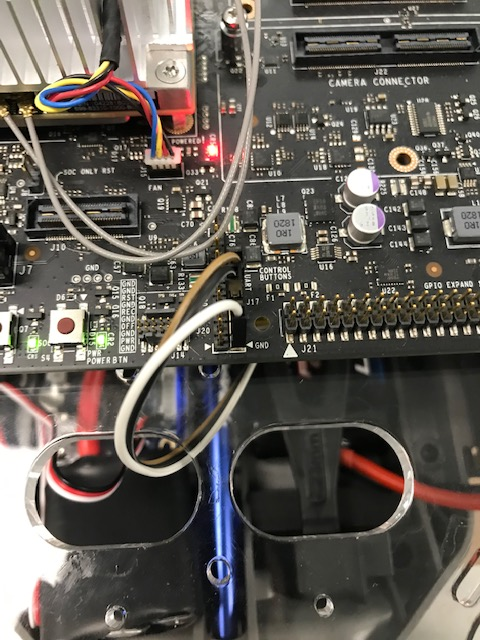

VESC Getting Started

My advice is if you are setting up for the first time, it is easy to do it on PC than TX2.
Required
Download VESC_tool from vesc-project. This will work with PC. If you want to download it for TX2 then you have to compile the whole package from github. Most of the VESC’s currently in the market need vesc_tool. Download bldc_tool from github and compile and make the project.
Install ACM module to use it with TX2, follow the jetsonhacks guide. Make sure the ACM port is added to dialout group.
Setting Up
When the battery is connected only the blue light should be on.

If there the red light is blinking then it means there is some fault, in my case it was because the default battery voltage mismatch. It can be updated once it is connected to bldc_tool or vesc_tool.
New VESC’s (i.e. Software Firmware > 2.18) need to be connected to vesc_tool. Click connect on the vesc_tool once the usb is hooked up to the PC. To work with vesc ros driver from mit-racecar we need to downgrade the software firmware connection to 2.18. Go to the firmware tab and click custom file and select the file from the firmware folder in the BLDC_tool folder, make sure you have the right hardware version and then select the .bin file with servo option and flash it. Once it is flashed we can use bldc_tool to play around with the VESC.
Below is the bldc_tool home make sure to enter the correct voltage values (Check the battery) in here and click write configuration button. Usually vesc is connected on to ttyACM0 with USB connection, since I am using UART header on TX2 it shows ttyTHS2.

Here is the screenshot of firmware tab in the bldc_tool.

Here is the example of the servo firmware which is needed to be flashed to control the car.
In the experiment tab, once both servo of the car and motor are connected to the VESC then by sliding the servo output pointer you can steer the car and run the motor by selecting the duty cycle and rpm values in the control tab.
I have removed the camera module in the TX2 dev kit to use the UART1 on the pin J17 which is listed as dev/ttyTHS2. Connect the RX,TX, GND on P3 of VESC respectively to J17 pin header on TX2. Connection setup as well as pinout for J17 on TX2 is shown below.
